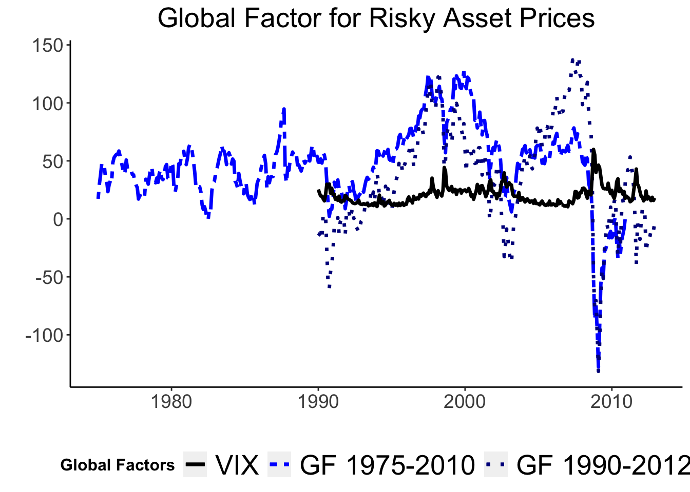
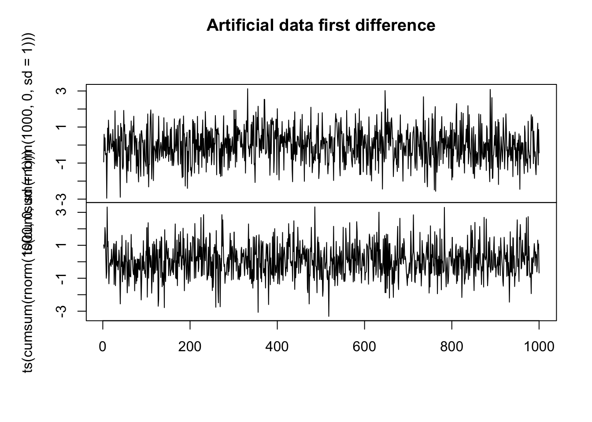
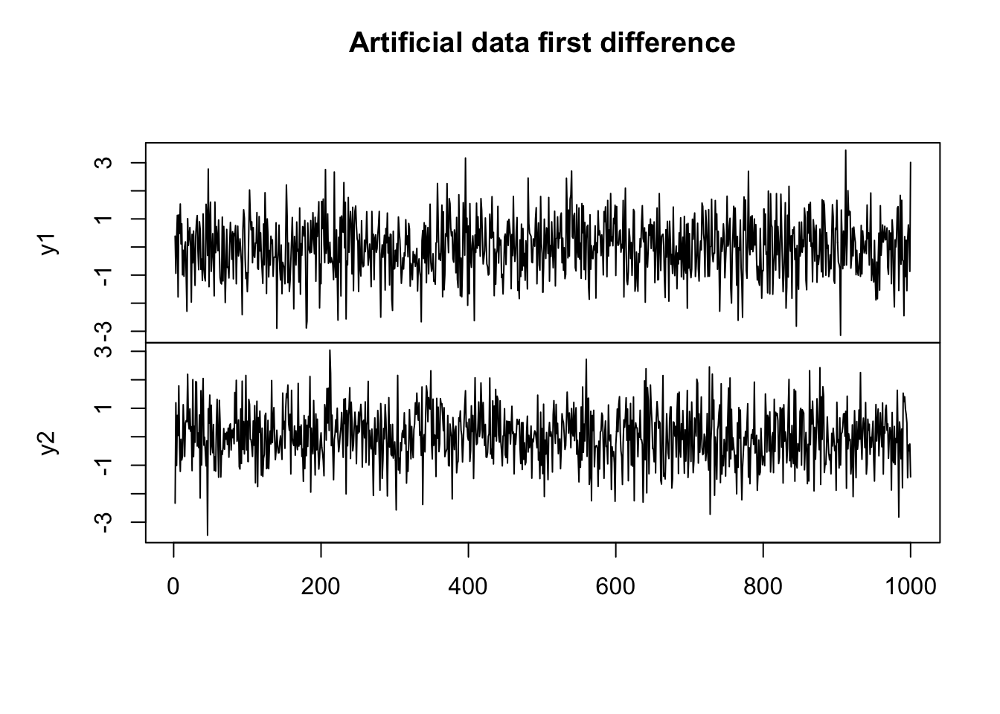

A Proxy-SVAR Reproduction Model
Keywords. proxy svars, impulse responses, U.S. mps
Introduction
I replicate (miranda2020us?), Review of Economic Studies. In their paper, the authors jointly evaluate the effects of financial, monetary and real variables, in the U.S. and abroad, following a 1% shock of the Federal Reserve (FED) interest rate. In particular, the authors rely on an instrumental variable to identify U.S. monetary policy shocks. This is to avoid implausible restrictions on their variable of interest. My task will be to understand the model of these two scholars and replicate it with simplifications given the time scope of the Macroeconometrics course taught by Dr. Tomasz Woźniak. The specific challenge will be writing R codes to disentangle their framework.
The Paper
Global Factor in Risky Asset Prices
Miranda-Agrippino and Rey in the first part of the paper estimate a global factor to proxy the movement of world risky asset prices. They do so by collecting 858 prices of different risky assets traded in North America, Latin America, Europe, Asia Pacific, and Australia, from 1990 to 2012. Their method is to pick a representative market index (i.e. S&P 500) for each market at the end of 2012, including all of its components, selecting prices that allow them to cover at least 80% of cross sectional observations by 1990 and 95% in 1995. They do so to avoid over-representation of each category. With this global factor, they can explain over 20% of global risky asset price volatility in their time span. Given the small time frame and VAR analysis limitations, they estimate a global factor with commodities from the U.S., Europe, and Japan, spanning back to 1975. This factor covers 60% of the volatility in this period. The appendix of the paper provides detailed information on this VAR estimation. To provide more intuition on this factor, the authors correlate it with some indexes of implied volatility such as the VIX, outlining its co-movement with common measures of market variation (in this case a negative correlation). The global factor will be used later in the impulse-response section.

Proxy-VAR Analysis with Rich-Information Bayesian VAR
In this project, I will avoid the computation of the global factor, because it is out of scope of the Macroeconomerics subject. Instead, I will concentrate on the Bayesian VAR analysis of Miranda-Agrippino and Rey. A main reason why the authors studied the monetary effects of U.S. interest rate changes is that the dollar is the currency of global banking. A change in FED monetary policy affects banks’ borrowing capacity, the pricing of dollar denominated assets, and cross-border capital flows. In order to isolate its effects, the two scholars identify U.S. monetary policy shocks by exploiting 30-min price revisions around Federal Open Market Committee (FOMC) announcements in the fourth federal funds futures contracts (FF4). The intuition is that these futures have an average maturity of three months, and they can predict revisions of market expectations about future monetary policy one-quarter in advance. This assumption holds only if market participants can distinguish between the systematic component of policy and any observable policy action. Moreover, with asymmetrical information, the FF4 revisions contain information about the influence of economic factors relevant to U.S. monetary policy. Policy announcements provide this information implicitly.
The Data
I download the data directly from the website of Miranda-Agrippino. The two authors study the consequences of a 1% increase in the U.S. monetary policy considering:
-a domestic VAR with the effects on domestic financial markets and macroeconomic aggregates in the United States;
-a global VAR with the effects on global asset markets, global domestic credit and international capital flows;
-a “floaters” VAR to study if a fixed or pegged exchange rate affects the global contraction.
I will study the global specifications, and I will include the following variables:


Order of Integration of the Variables
I run an augmented Dickey Fuller (ADF) Test to determine the order of integration of my variables. All the variables except the instrument fail to reject the null hypotheses that the variables present a uni-root. In order to provide more insight on the order of integration I re-run an ADF test with the first difference of the variables. I expect it to be integrated of order 1 (I(1)). The ADF test of the first-difference data supports these expectations:
| Dickey-Fuller | Lag-order | p-value | Dickey-Fuller diff | Lag-order | p-value |
|---|---|---|---|---|---|
| -4.492 | 6 | 0.010 | -10.666 | 6 | 0.01 |
| -2.349 | 6 | 0.429 | -6.200 | 6 | 0.01 |
| -2.612 | 6 | 0.318 | -4.047 | 6 | 0.01 |
| -1.425 | 6 | 0.818 | -7.129 | 6 | 0.01 |
| -2.031 | 6 | 0.563 | -7.166 | 6 | 0.01 |
| -1.857 | 6 | 0.636 | -6.564 | 6 | 0.01 |
| -3.305 | 6 | 0.071 | -5.053 | 6 | 0.01 |
| -1.639 | 6 | 0.728 | -5.512 | 6 | 0.01 |
| -1.692 | 6 | 0.706 | -4.354 | 6 | 0.01 |
| -2.032 | 6 | 0.562 | -4.474 | 6 | 0.01 |
| -2.699 | 6 | 0.282 | -5.411 | 6 | 0.01 |
| -3.276 | 6 | 0.076 | -5.696 | 6 | 0.01 |
| -1.529 | 6 | 0.774 | -5.348 | 6 | 0.01 |
| -1.637 | 6 | 0.729 | -6.037 | 6 | 0.01 |
The Model
BVAR Framework
From Herwatz, Rohloff & Wang(2022) I define the model as: \[ y_t=B_0B_1y_{t-1}+...+B_0B_py_{t-p}+B_0\varepsilon_t, t=1,..,T \] \[y_t=A_1y_{t-1}+...+A_py_{t-p}+u_t\] where \(A_j, : \left \{j=1,2,\dots,p\right \}\) where \(A(L)=B_0B(L)\) are a K x K coefficient matrices, and L is the lag operator, and \(u_t\) in the first reduced form is serially uncorrelated with zero mean and positive definite (non-diagonal) covariance matrix \(\Sigma_u.\) The structural shocks \(\varepsilon_t\) in the second reduced form assumed to be mutually uncorrelated and normalised to have unit variance. \(\Xi\left(\varepsilon_t \varepsilon_t' \right)=I_K\). Structural shocks are mapped to the reduced-form system through a K x K non-singular matrix \(B_0\), such that \(B_0^{-1}B_0^{-1'}=\Sigma_u\). For simplicity, the process is assumed to be causal and \(detA(z)=det(I_k-\sum_{j=1}^{p}A_jz^{j})\neq 0\) for \(\left| z \right|\le 1\). This ensures that the process has a Wold moving average MA representation. Moreover,
\[\begin{align*} y_t=\mu+\sum_{i=0}^{\infty}\Phi_iu_{t-i}=\mu+\sum_{i=0}^{\infty}\Phi_iB_0\varepsilon_{t-i}= \mu+\sum_{i=0}^{\infty}\Theta_i\varepsilon_{t-i}. \end{align*}\]With: \[\begin{gather} \mu=A(1)^{-1}\nu, ::: \Phi_0=I_K, \ \Phi_i=\sum_{j=1}^{i}A_j\Phi_{i-j}, ::: A_j=0 :for: j>p. \end{gather}\] The second to last MA representation is of particular importance because the structural MA coefficients \(\Theta_i=\Phi_iB_0\) cannot be recovered without a proper identification. I will briefly outline the Proxy SVAR approach.
Let \(z_t\) be an external instrument to identify the structural shock of interest \(\varepsilon_{kt}, k\:\epsilon \: \left \{1,\dots, K\right \}\). \(z_t\) has to satisfy the relevant condition \(\Xi(\varepsilon_{kt}z_t)=\phi \neq 0\) and the exogeneity condition \(\Xi(\varepsilon{lt}z_t)=0, \forall l\:\epsilon\left \{1,\dots, K\right \}\setminus\left \{k\right \}\).
From these conditions, it follows that the population covariance between the instrument and VAR residuals obtain the k-th column if \(B_0\), denoted by \(B_{0k}\).
\[ \Xi(u_tz_t) = B_{0,k}\Xi(\varepsilon{kt}z_t)=\phi B_{0,k} \]
Moreover, let \(\Pi\) denotes the \(1\)x\(K\) coefficient vector from the regression of the instrument on the residual vector \(u_t\) gives the shock \(\varepsilon_{kt}\) up to a scale \(\phi\).
\(\Pi u_t=\Xi(z_tu^{'}_t)\Sigma_{u}^{-1}u_t=\phi B^{'}_{0,k}\left [B_0B_0^{'} \right ]u_t=\phi e^{'}_t\varepsilon_{kt}\)
(MollerWolf2021LPVARS?), exploiting their result that Local Projections and VAR impulse response function are equal up to a constant of proportionality, show that proxy SVARS impulse responses can be computed putting the instrument in the first row of the data vector \(y_t\) in a SVAR fraamework. This result follows from invertibility of \(\varepsilon\) and two assumptions: -the data \(y_t\) is covariance-stationary; -the data \(y_t\) is a jointly Gaussian vector time series. In our Bayesian approach these requirements are met when we define the distributions of our error terms. I will outline them in the next section.
Basic Model
I specify my model to follow a matrix-variate normal distribution \[\begin{gather} Y = XA + E \\ \\ E|X \sim MN_{T \times N}(0_{T \times N},\Sigma,I_T) \end{gather}\] Given that the function Y is a linear combination of the error terms E, we can specify \[\begin{gather} Y|X,A,\sim MN_{T \times N}(XA,\Sigma,I_T) \end{gather}\] Hence, the Likelihood function follows a Matrix-Variate-Normal form: \[\begin{gather} L(A,\Sigma|Y,X) \propto det(\Sigma)^{-\frac{T}{2}} exp \left\{-\frac{1}{2} tr \left[ \Sigma^{-1}(Y-XA)'(Y-XA) \right] \right\} \\ \\ \propto det(\Sigma)^{-\frac{T}{2}} exp \left\{-\frac{1}{2} tr \left[ \Sigma^{-1}(A-\hat{A})'X'X(A-\hat{A}) \right] \right\} exp \left\{-\frac{1}{2} tr \left[\Sigma^{-1}(Y-X \hat{A})'(Y-X \hat{A}) \right] \right\} \\ \end{gather}\] where from Maximum Likelihood Estimation we have obtained \[\begin{gather} \hat{A} = (X'X)^{-1}X'Y \\ \\ \hat{\Sigma} = \frac{1}{T} (Y-X \hat{A})'(Y-X \hat{A}) \end{gather}\] In the basic model, our prior follows a natural-conjugate prior distribution of the same form: \[\begin{gather} p(A,\Sigma) = p(A|\Sigma) p(\Sigma) \\ \\ A|\Sigma \sim MN_{K \times N} (\underline{A}, \Sigma , \underline{V}) \\ \\ \Sigma \sim IW_{N}(\underline{S},\underline{\nu}) \end{gather}\]
With parameters: \[\begin{gather} \underline{A} = [0_{N \times 1} \quad I_N \quad 0_{N \times (p-1)N}]' \\ \\ Var[vec(A)] = \Sigma \otimes \underline{V} \\ \\ \underline{V} = diag([\kappa_2 \quad \kappa_1 (p^{-2} \otimes I_N)]) \\ \\ p = [1,2,...p] \end{gather}\] The parameter \(\kappa_2\) and \(kappa_1\) specify respectively the prior of the overall shrinkage level for the constant term and for the autoregressive slopes. I specify \(\kappa_2=1\) and \(\kappa_1=0.02\) based on the fact that you should shrink the constant term much less than the autoregressive parameters. Furthermore, the full conditional posterior is: \[\begin{gather} p(A,\Sigma|Y,X) = p(A|Y,X,\Sigma)p(\Sigma|Y,X) \\ \\ p(A|Y,X,\Sigma) = MN_{K \times N}(\bar{A}, \Sigma, \bar{V}) \\ \\ p(\Sigma | Y, X) = IW_N(\bar{S},\bar{\nu}) \end{gather}\]
We can derive the full conditional posterior: \[\begin{gather} P(A,\Sigma|Y,X) \propto L(A,\Sigma|Y,X)p(A,\Sigma) \\ \\ \propto L(A,\Sigma|Y,X)p(A|\Sigma)p(\Sigma) \\ \\ det(\Sigma)^{-\frac{T}{2}} \times exp \left\{-\frac{1}{2} tr \left[ \Sigma^{-1}(A-\hat{A})' X'X (A-\hat{A})\right] \right\} \\ \\ \times exp\left\{-\frac{1}{2}tr \left[ \Sigma^{-1}(Y-X\hat{A})'(Y-X\hat{A}) \right] \right\} \\ \\ \times det(\Sigma)^{-\frac{N+K+\underline{\nu}+1}{2}} \\ \\ \times exp\left\{-\frac{1}{2}tr \left[ \Sigma^{-1}(A-\underline{A})'\underline{V}^{-1}(A-\underline{A}) \right] \right\} \\ \\ \times exp \left\{ -\frac{1}{2} tr \left[ \Sigma^{-1} \underline{S} \right] \right\} \end{gather}\]
After some calculations:
\[\begin{gather}\\ p(A,\Sigma|Y,X) \propto \\ \\ det{(\Sigma)}^{-\frac{T+N+K+ \underline{\nu} +1}{2}} \times exp\left\{ -\frac{1}{2} tr \left[ \Sigma^{-1} \left[ (A-\bar{A})^{'} \bar{V}^{-1} (A-\bar{A})+\underline{S} +Y^{'}Y + \underline{A}^{'} \underline{V}^{-1}\underline{A} -\bar{A}^{'} \bar{V}^{-1}\bar{A}\right]\right]\right\} \end{gather}\]where the full conditional posterior has the same natural-conjugate form of our prior:
\[\begin{gather} p(A,\Sigma|Y,X) = p(A|Y,X,\Sigma)p(\Sigma|Y,X) \\ \\ p(A|Y,X,\Sigma) = MN_{K \times N}(\bar{A}, \Sigma, \bar{V}) \\ \\ p(\Sigma | Y, X) = IW_N(\bar{S},\bar{\nu})\end{gather}\]with posterior parameters:
\[\begin{gather} \bar{V} = (X^{'}X+ \underline{V}^{-1})^{-1} \\ \\ \bar{A} = \bar{V}(X^{'}Y+\underline{V}^{-1} \underline{A}) \\ \\ \bar{\nu} = T + \underline{\nu} \\ \\ \bar{S} = \underline{S} + Y^{'}Y + \underline{A}^{'}\underline{V}^{-1}\underline{A} - \bar{A}^{'}\bar{V}^{-1}\bar{A} \end{gather}\]In order to compute our posterior parameters in R, we first specify values for our priors, then we calculate the posteriors and draw \(A\) and \(\Sigma\) respectively from a Matrix-Variate-normal and Inverse Wishart distributions.
##Extended Model
In the extended model, I set hyperprior parameters for the autoregressive parameter \(\kappa_A\) to follow an Inverse Gamma 2 distribution \(IG2(\underline{S}_{\kappa},\underline{\nu}_{\kappa})\) and \(\kappa_{\Sigma}\) hyperprior parameter for the variance-covariance matrix to follow a Gamma Distribution \(G(\underline{S}_{\Sigma},\underline{a}_{\Sigma})\). I will define the full conditional posterior of the hyperparameter \(\kappa_A\) first.
\[\begin{gather} p(\kappa_a | A,\Sigma, Y,X) \propto L(Y|X,A,\Sigma) \times p(\kappa_a) \times p(A|\Sigma,\kappa_a) \times p(\Sigma|\kappa_a) \\ \\ \propto p(\kappa_a) \times p(A|\Sigma,\kappa_a) \\ \\ \propto (\kappa_a)^{-\frac{\underline{\nu_a}+2}{2}} exp\left\{ -\frac{1}{2} \frac{\underline{S_a}}{\kappa_a} \right\} \times exp\left\{-\frac{1}{2}tr\left[\Sigma^{-1}(A-\underline{A_{\kappa}})^{'} \frac{1}{\kappa}(\underline{V_{\kappa}})^{-1} (A-\underline{A})\right]\right\} \times det(\kappa_a \underline{V})^{-\frac{N}{2}} \\ \\ \propto (\kappa_a)^{-\frac{\underline{\nu_a}_{\kappa_a}+2+NK}{2}} exp \left\{-\frac{1}{2} \frac{1}{\kappa_a} \left[\underline{S_a}_{\kappa_a} + tr \left[\Sigma^{-1}(A-\underline{A})^{'}\underline{V}^{-1}(A-\underline{A}) \right]\right] \right\} \end{gather}\]
where we can recognise the kernel of an Inverse Gamma 2 Distribution with
\[\begin{gather} \bar{S}_a = \underline{S}_a+tr \left[ \Sigma^{-1} (A-\underline{A})^{'} \underline{V}^{-1} (A-\underline{A})\right] \\ \\ \bar{\nu}_a = \underline{\nu}_a+NK \end{gather}\]
In addition, I derive similarly the full conditional posterior of the hyperparameter \(\kappa_{\Sigma}\). \[\begin{gather} p(\kappa_{\Sigma} | A,\Sigma, Y,X) \propto p(\kappa_{\Sigma} | A,\Sigma, Y,X) \propto L(Y|X,A,\Sigma) \times p(\kappa_{\Sigma}) \times p(A|\Sigma,\kappa_a) \times p(\Sigma|\kappa_{\Sigma}) \times p(\kappa_a) \\ \\ \propto p(\kappa_{\Sigma}) \times p(\Sigma|\kappa_{\Sigma}) \\ \\ \propto (\kappa_{\Sigma})^{-\frac{\underline{\nu}N}{2}} exp\left[{ -\frac{1}{2} \frac{\kappa_{\Sigma}}{tr\left [\Sigma^{-1}\underline{s}_{\Sigma} \right ]^{-1}}} \right\} \times (\kappa_{\Sigma})^{\underline{a}_{\Sigma}-1}exp\left [{-\frac{\kappa_{\Sigma}}{\underline{s}_{\Sigma}}} \right ] \\ \\ \propto (\kappa_{\Sigma})^\frac{{}{N\underline{\nu}+2\underline{a}_{\Sigma}-2}}{2}exp\left [{-\frac{\kappa_{\Sigma}}{\left [2tr\left[\Sigma^{-1}\underline{s}_{\Sigma} \right ]^{-1}+\left[\underline{s}_{\Sigma} \right ]^{-1}\right ]^{-1}}} \right ] \\ \end{gather}\] where we can recognise the kernel of an Gamma Distribution with \[\begin{gather} \bar{S}_{\Sigma} = {\left [2\left[tr\Sigma^{-1}\underline{s}_{\Sigma} \right ]^{-1}+\left[\underline{s}_{\Sigma} \right ]^{-1}\right ]^{-1}} \\ \\ \bar{a}_{\Sigma} = \frac{N\underline{\nu}}{2}+\underline{a}_{\Sigma} \end{gather}\]
Therefore, our new full conditional posterior distribution will be as following: The full conditional posterior of \((A,\Sigma)\) is: \[\begin{gather} p(A,\Sigma|X,Y,\kappa_a,\kappa_{\Sigma}) \propto L(A,\Sigma|Y,X) \times p(A|\Sigma,\kappa_a) \times p(\Sigma|\kappa_{\Sigma}) \\ \\ \propto det(\Sigma)^{-\frac{K}{2}} exp \left\{-\frac{1}{2}tr \left[ \Sigma^{-1}(Y-XA)^{'}(Y-XA)\right] \right\} \\ \\ \times exp \left\{ -\frac{1}{2} tr \left[ \Sigma^{-1}(A-\underline{A})^{'}(\kappa_a \underline{V})^{-1}(A-\underline{A}) \right] \right\} \\ \\ \times det(\Sigma)^{\frac{\underline{\nu}+N+1}{2}} exp\left\{-\frac{1}{2} tr \left[\Sigma^{-1}\kappa_{\Sigma} \right] \right\} \end{gather}\]
We recognize kernel of matrix-normal inverse Wishart distribution, with parameters as follows: \[\begin{gather} \bar{V} = (X'X+(\kappa_a \underline{V}))^{-1} \\ \\ \bar{A} = \bar{V}(X'Y+(\kappa_a \underline{V}^{-1}\underline{A})) \\ \\ \bar{S} = I_N\kappa_{\Sigma}+Y'Y+\underline{A}^{'}(\kappa_a \underline{V})^{-1}\underline{A} - \bar{A}^{'} \bar{V}^{-1}\bar{A} \\ \\ \bar{\nu} = T + \underline{\nu} \end{gather}\]
Gibbs Sampler
In order to reach our analytical solutions we use a Monte Carlo Markov Chain (MCMC) method, namely the Gibbs Sampler procedure. We generate random draws from the joint posterior distribution and we update them at each iteration to compute our posterior distribution parameters. In our case we exploit the following procedure: Initialize \(\kappa_a\) and \(\kappa_{\Sigma}\) at \(\kappa_a^{(0)}\) and \(\kappa^{(0)}_{\Sigma}\)
At each iteration s:
- Draw \((A,\Sigma)^{(s)} \sim p(A,\Sigma| X,Y,\kappa_a^{(s-1), \kappa_{\Sigma}^{(s-1)})\)
- Draw \(\kappa_a^{(s)} \sim p(\kappa_a|Y,X,A,\Sigma)\)
- Draw \(\kappa_{\Sigma}^{(s)} \sim p(\kappa_{\Sigma}|Y,X,A,\Sigma)\)
Repeat steps 1 and 2 for \((S_1 + S_2)\) times. Discard the first \(S_1\) repetitions. Return the output as \(\left \{ A^{(s)}, \Sigma^{(s)} \right \}^{S2}_{s=S1+1}\).
Artificial Data
I generate two random walks \(y1\) and \(y2\) with 1000 observations each simulated from a bivariate Gaussian random walk process. I plot the raw series and the first difference below:


Then, I use my two functions from the basic and extended model to simulate the posterior of the intercept term